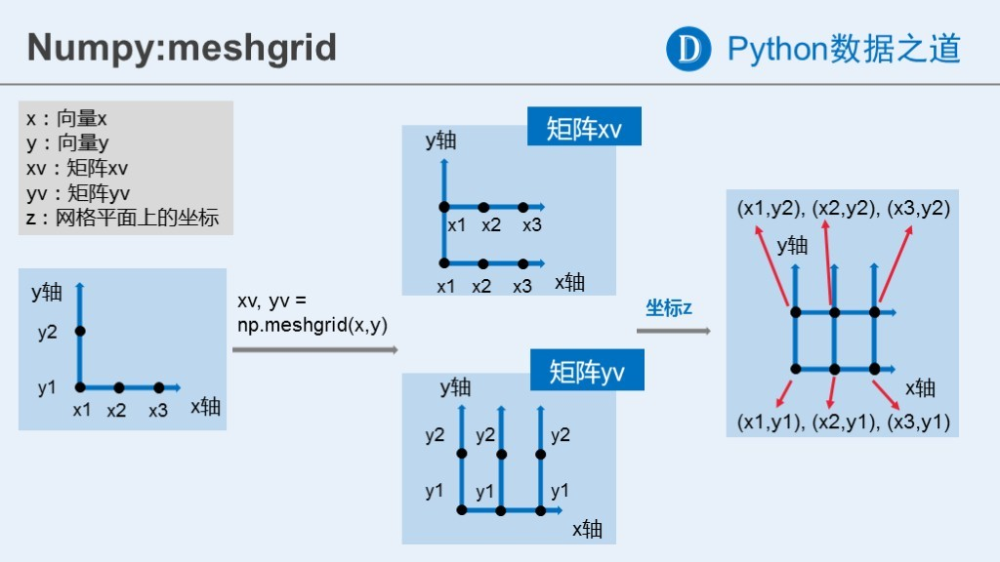

参考书籍：
NumPy: Quickstart tutorial
《Python数据分析基础教程：NumPy学习指南》（第二版），Lvan Ldris
NumPy, SciPy, Pandas区别：
NumPy：以矩阵为基础的数学计算模块，纯数学。SciPy：基于Numpy，科学计算库，有一些高阶抽象和物理模型。比方说做个傅立叶变换，这是纯数学的，用Numpy；做个滤波器，这属于信号处理模型了，在Scipy里找。Pandas：提供了一套名为DataFrame的数据结构，比较契合统计分析中的表结构，并且提供了计算接口，可用Numpy或其它方式进行计算。
注：本文只对NumPy进行基本介绍，若要深入使用某个模块或类或函数，请查阅官方文档
数组对象
NumPy的数组类为ndarray，这是一个所有的元素都是一种类型、通过一个正整数元组索引的元素表格(通常是元素是数字)。
基本数据类型
np.ndarray：多维数组类np.dtype：数据类型类
dt = np.dtype(np.int32) # 32-bit integer
dt = np.dtype(np.complex128) # 128-bit complex floating-point number
ndarray属性
以二维数组为例：
a =
[[ 0 1 2 3 4]
[ 5 6 7 8 9]
[10 11 12 13 14]]
a.ndim= 2 : 数组维度，也将维度叫做轴a.shape= (3, 5) : 数组每个维度的长度a.size= 15 : 数组元素总个数a.itemsize= 4 : 一个元素的大小，单位为字节a.nbytes= 60 : 所有元素占的空间大小，单位为字节a.dtype: 元素数据型类a.T: 矩阵转置a.real: 复数数组的实部a.imag: 复数数组的虚部a.flat: 数组迭代器，示例如下
print([i for i in a.flat]) # 将a当作一维数组，遍历a中所有元素
print(a.flat[0]) # 将a当作一维数组，访问a[0]
print(a.flat[[10,3]]) # 将a当作一维数组，再取a[10]和a[3]组成一个list
创建数组
arange, array
a = np.arange(1, 5, 2, dtype=int) # 创建一维数组[1 3]，元素类型为int
c = np.arange(15).reshape(3, 5) # 使用reshape创建3x5的多维数组
# 使用array从常规list和tuple创建数组
# 创建2x2的数组，元素类型为np.float
b = np.array([a, np.arange(2)], dtype=np.float)
empty, ones, zeros, full
a = np.ones(3, dtype=int) # 创建一维数组[1 1 1]
b = np.ones((2, 3), dtype=float) # 创建2x3的float数组，元素初始值为1.0
c = np.ones_like(b, dtype=int) # 创建和b相同2x3维度的int数组，无素初始值为1
# empty,ones,zeros,full,full_like等的用法类似，只是初始值不同
# empty : 随机初始值
# ones : 1初始值
# zeros : 0初始值
# full : 指定初始值，如 np.full(3, 1.8) 即指定初始值为1.8
eye, identity：创建单位矩阵数组
a = np.eye(3, dtype=float) # 创建二维3x3的单位矩阵数组
a = np.eye(3, 4) # 创建二维3x4的单位矩阵数组
b = np.identity(3) # 创建3x3的单位矩阵数组
fromstring, fromfile, loadtxt：从字符或文件创建数组
b = np.fromstring('1, 4, 5', dtype=int, sep=',' )
b = np.fromfile('test.txt', dtype=int, count=3, sep=',')
# test.txt内容：1, 2, 3, 4, 5, 6
# 创建的数组为[1 2 3]，即count代表数组长度，sep为分割符
a = np.loadtxt('test.txt', comments='#',delimiter=',')
# test.txt中每行的列数需要相同
# comments代表注释释，delimiter代表分割符
linspace, logspace, geomspace：等间距创建一组数组
a = np.linspace(1, 4, num=5, dtype=float) # 范围从1到4
a = np.logspace(1, 2, num=5, dtype=float) # 取10^n，n从1到2等间距取5个数
a = np.geomspace(1, 4, num=3, dtype=float) # 创建等比数列，范围从1到4
meshgrid：等间距创建多维数组
a = np.arange(-2, 2, 1) # 竖线a = [-2 -1 0 1 2]
b = np.arange(-2, 2, 1) # 横线b = [-2 -1 0 1 2]
x, y = np.meshgrid(a, b) # 平面坐标x,y竖线和横线的相交坐标点
meshgrid示意图如下（原图地址）：

diag, diagflat, tri：创建特殊矩阵数组
a = np.diag(np.arange(5)) # 创建对角矩阵数组
a = np.diagflat(np.arange(3), 1) # 对角线向上移1一个单位的对角矩阵数组
a = np.tri(3, 4) # 创建三角矩阵数组
数组基本操作
数组的索相、切片和迭代
一维数组可以被索引、切片和迭代，就像list和其它Python序列。多维数组每个轴有一个索引，这些索引由一个逗号分割的元组给出。
a = np.array([[-1,2], [3,4]])
print(a[0,1]) # 索引单个元素
print(a[0][1]) # 索引单个元素
print(a[0,:]) # 切片
print(a[0]) # 切片，等同于a[0,:]
print([i for i in a[-1]]) # 迭代第-1维中的所有元素
数组组合与分割
- NumPy数组有水平组合、垂直组合和深度组合等多种组合方式，可以用
vstack,dstack,hstack,column_stack,row_stack和concatenate函数来完成。
a = np.array([[-1,2], [3,4]])
b = np.array([[6,8], [9,6]])
c = np.hstack((a,b)) # 水平组合
c = np.vstack((a,b)) # 垂直组合
c = np.dstack((a,b)) # 深度组合
c = np.concatenate((a,b), axis=1) # 在维度1方向上组合，即水平组合
c = np.concatenate((a,b), axis=0) # 在维度0方向上组合，即垂直组合
c = np.concatenate((a,b), axis=2) # 在维度2方向上组合，即深度组合
深度组合，可以看成两个二维坐标值合成三维坐标：
a = np.linspace(-1, 1, 3)
b = np.linspace(-1, 1, 3)
x,y = np.meshgrid(a, b)
c = np.dstack((x, y))
# 结果如下：
x=
[[-1. 0. 1.]
[-1. 0. 1.]
[-1. 0. 1.]]
y=
[[-1. -1. -1.]
[ 0. 0. 0.]
[ 1. 1. 1.]]
c=
[[[-1. -1.] [ 0. -1.] [ 1. -1.]]
[[-1. 0.] [ 0. 0.] [ 1. 0.]]
[[-1. 1.] [ 0. 1.] [ 1. 1.]]]
- NumPy数组同样可以进行水平、垂直或深度分割，可以
hsplit、 vsplit、 dsplit和split函数来完成。
a = np.array([[-1,2], [3,4]])
c = np.hsplit(a, 2) # 水平分割，分割的数组保存在list中
c = np.vsplit(a, 2) # 垂直分割，分割的数组保存在list中
c = np.dsplit(np.stack((a, a)), 2)
# 深度分割，分割的数组保存在list中
c = np.split(a, 2, axis=1) # 按维度1方向分割，等同于水平分割
c = np.split(a, 2, axis=0) # 按维度0方向分割，等同于垂合分割
c = np.split(np.stack((a, a)), 2, axis=2)
# 按维度2方向分割，等同于深度分割
数组维度修改
- 查看维度
a.ndim : 数组维度，也将维度叫做轴
a.shape : 数组每个维度的长度
- 修变、添加、删除维度
a.reshape : 修改维度，修改前后的总元素数需要相同
np.expand_dims: 添加维度，其长度为1
np.squeeze: 删除维度，其长度为1才能删除
a = np.arange(0, 100).reshape(10, 10) # shape = (10, 10)
a = a.reshape(-1, 10, 10, 1) # shape = (1, 10, 10, 1)
# -1表示自计算轴的长度
a = np.expand_dims(a, 2) # shape = (10, 10, 1)
a = np.squeeze(a, 2) # shape = (10, 10)
数组运算
基本运算
Python内置的基本运算符对ndarray操作时，是按元素操作的，所以两个运算的数组，以及运算的结果，必定是维度相同，且每个维度的长度也相同。
a = np.array([[1,2], [3,4]])
b = np.array([[-1,-2], [0,5]])
a += (a//b)
c = a >= b
a **= 2 # a中的每个元素进行 **=2 运算
Python的许多内置一元函数，也作为ndarray的成员方法实现了。
a = np.array([[1,2], [3,4]])
c = a.sum() # a中所有元素求和
c = a.min(axis=0) # 按维度（用axis指定维度）求最小值
c = a.mean(axix=1) # 按维度求平均
通用函数
NumPy提供了常用的数学函数，如sin,cos,exp等，NumPy称之为通用函数(ufunc)。通用函数也是按元素计算的。
a = np.array([[1,2], [3,4]])
c = np.abs(a)
c = np.sin(a)
c = np.exp(a)
c = np.sum(a) # 对所有元素求和
c = np.mean(a, axis=0) # 按维度求平均
c = np.median(a, axis=1) # 按维度求中值
c = np.std(a, axis=0) # 按维度求标准仿差
数组复制
当运算和处理数组时，它们的数据有时被拷贝到新的数组，有时只是指针的操作。分以下三种情况分别说明:
- 完全不拷贝，只是指针的赋值
a = np.arange(1, 5)
b = a # 简单赋值，即有id(a) = id(b)，修改b，则同样会修改a
def f(x):
x += 2
f(a) # 作为函数参数传递，相当于按址传递
- view和浅拷贝
a = np.arange(1, 5)
b = a.view() # a与b共享数组数据，但保存各自的属性值
b[0] = -1 # 修改b的数据，a的数据也会改变
b.shape = (2, 2) # 修改b的属性，a的属性不会改变
print(a.shape, b.shape) # a,b的属性不相同
print(a.ndim, b.ndim)
print(b[0][1]) # b需要可以按自己的shape访问数据
b = a[:] # 切片数组返回的是一个view
- 深度拷贝
a = np.arange(1, 5)
b = a.copy() # 创建一个内容相同的新数组，a,b不会相互影响
数组其它操作
在The N-dimensional array详细介绍了ndarray的用法，这里简单列举一些常用函数。
ndarray.tolist: 将数组内容转成listndarray.tofile: 将数组内容保存到文件ndarray.astype: 转换数组元素类型ndarray.byteswap: 互换数组元素型高低位（大小端转换）ndarray.fill: 数组内容填充ndarray.reshape: 修改shape（元素总数size不变）ndarray.resize: 同时修改shape和sizendarray.swapaxes: 交换维度ndarray.flatten: 以一维数组形式返回所有元素的copyndarray.take: 从ndarray中取出元素按，指定形式生成新的数组ndarray.put: 根据指定形式，给ndarray中元素赋值（与take相反）ndarray.repeat: 重复元素内容ndarray.sort: 数组排序ndarray.partition: 使指定轴点于数组排序后所在的位置（类似于快排的轴点）ndarray.diagonal: 返回对角线数组ndarray.ptp: 获取max-min值ndarray.argmax, ndarray.argmin: 返回最值索引ndarray.clip: 将数组元素的值置于指定范围内
数组与矩阵
NumPy中的数组ndarray可以是多维的，而矩阵matrix只能是二维的。NumPy中矩阵是数组的一个小的分支，所以matrix拥有ndarray的所有特性，且矩阵matrix可以进行一些矩阵特有的运算。
创建矩阵
mat, matrix：从输入创建矩阵
x = np.array([[1,2], [3,4]])
a = np.mat([[1,2], [4,5]]) # 将list转成矩阵
a = np.mat(x) # 将ndarray转化成矩阵
a = np.mat('1,2; 8,9') # 将string转成矩阵
b = np.matrix([[1,2], [4,5]]) # 将list转成矩阵
b = np.matrix(x, copy=True) # 将ndarray转化成矩阵
b = np.matrix('1,2; 8,9') # 将string转成矩阵
# 对于ndarray，使用mat，创建的是一个view，修改x，也会修改a
# 使用matrix，创建的是一个copy，修改x，不会影响a
# 使用asmatrix，等同于matrix(x, copy=False)
bmat：组合矩阵
a = np.mat('1,2; 8,9')
b = np.mat([[4,5], [6,7]])
c = np.bmat('a; b') # 在行（垂直）方向上组合
c = np.bmat([[a], [b]]) # 在行（垂直）方向上组合
c = np.bmat('a, b') # 在列（水平）方向上组合
c = np.bmat([[a, b]]) # 在列（水平）方向上组合
matrix类属性
A：转成ndarray数组返回A1：转成ndarray.flat返回H：返回转置共轭矩阵I：返回逆矩阵T：返回转置矩阵
matrix和ndarray比较
参考官方文章和翻译的中文(可以使用nbviewer在线查阅)，原文章还详细对比了numpy.matrix和Matlib。
Numpy中不仅提供了ndarray这个基本类型，还提供了支持矩阵操作的类matrix，但是一般推荐使用ndarray：
- 很多numpy函数返回的是ndarray，不是matrix
- 在ndarray中，逐元素操作和矩阵操作有着明显的不同
- 向量可以不被视为矩阵
具体比较
| ndarray vs matrix | |
|---|---|
*,dot(),multiply() |
array：* -逐元素乘法，dot() -矩阵乘法 matrix： * -矩阵乘法，multiply() -逐元素乘法 |
| 处理向量 | array：形状为 1xN, Nx1, N 的向量的意义是不同的，类似于 A[:,1] 的操作返回的是一维数组，形状为 N，一维数组的转置仍是自己本身 matrix：形状为 1xN, Nx1，A[:,1] 返回的是二维 Nx1 矩阵 |
| 高维数组 | array：支持大于2的维度 matrix：维度只能为2 |
| 属性 | array：.T 表示转置matrix： .H 表示复共轭转置，.I 表示逆，.A 表示转化为 array 类型 |
| 构造函数 | array：array 函数接受一个（嵌套）序列作为参数——array([[1,2,3],[4,5,6]])matrix：matrix 函数额外支持字符串参数—— matrix("[1 2 3; 4 5 6]") |
- 各自优缺点
| ndarray | |
|---|---|
GOOD |
一维数组既可以看成列向量，也可以看成行向量。v 在 dot(A,v) 被看成列向量，在 dot(v,A) 中被看成行向量，这样省去了转置的麻烦 |
BAD! |
矩阵乘法需要使用 dot() 函数，如： dot(dot(A,B),C) vs A*B*C |
GOOD |
逐元素乘法很简单： A*B |
GOOD |
作为基本类型，是很多基于 numpy 的第三方库函数的返回类型 |
GOOD |
所有的操作 *,/,+,**,... 都是逐元素的 |
GOOD |
可以处理任意维度的数据 |
GOOD |
张量运算 |
| matrix | |
|---|---|
GOOD |
类似与 MATLAB 的操作 |
BAD! |
最高维度为2 |
BAD! |
最低维度也为2 |
BAD! |
很多函数返回的是 array，即使传入的参数是 matrix |
GOOD |
A*B 是矩阵乘法 |
BAD! |
逐元素乘法需要调用 multiply 函数 |
BAD! |
/ 是逐元素操作 |
常用模块和函数
转载请注明来源，欢迎对文章中的引用来源进行考证，欢迎指出任何有错误或不够清晰的表达。可以在下面评论区评论，也可以邮件至 [ yehuohan@gmail.com ]